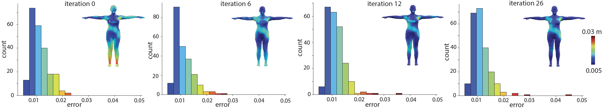
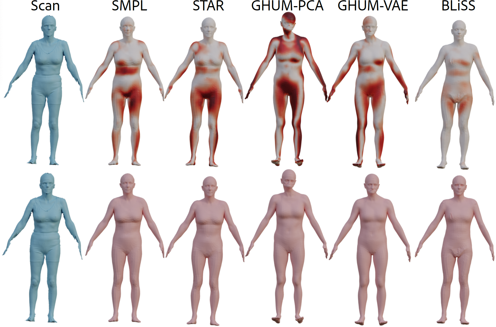
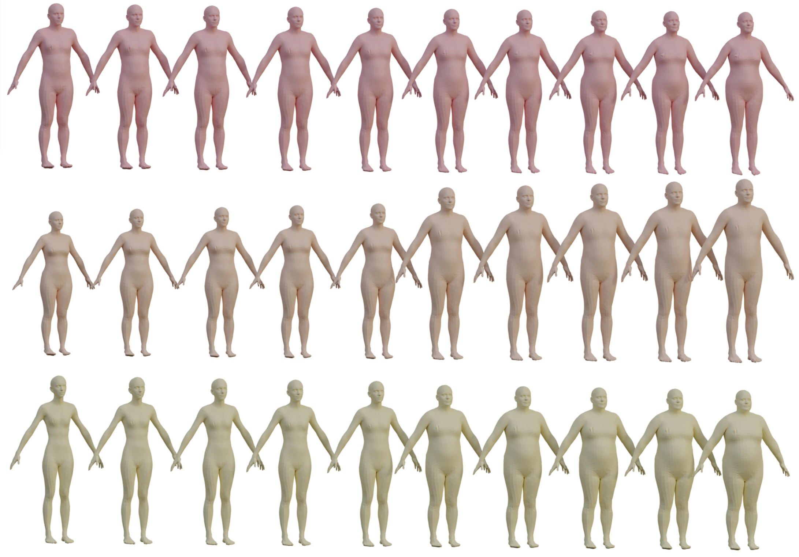
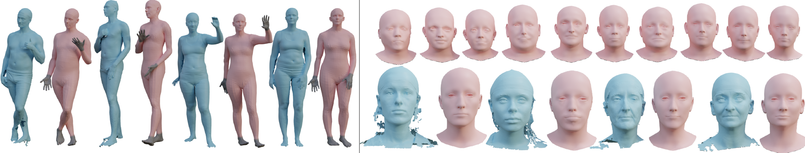
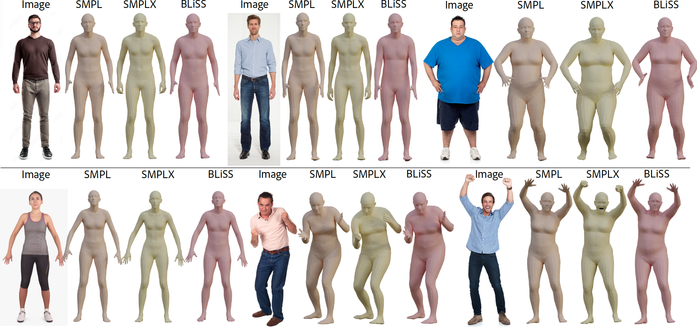
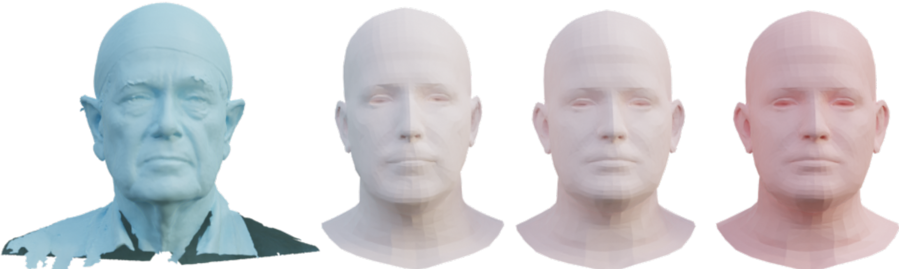
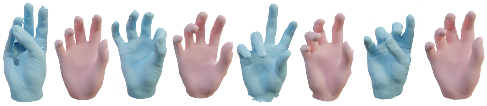

We present BLiSS, a method that progressively builds a human body shape space and brings unregistered scans into correspondence to a given template. Starting from as few as 200 manually registered scans (green samples), BLiSS creates an expressive shape space (pink samples), performing on-par with state-of-the-art models such as SMPL, STAR, and GHUM. (Right) Our space can be used to recover the body-shape parameters of raw scans by projecting them directly to ours
Abstract
Morphable models are a backbone for many human-centric workflows as they provide a simple yet expressive
shape space. Creating such morphable models, however, is
both tedious and expensive. The main challenge is to carefully establish dense correspondences among raw scans
that capture sufficient shape variation. This is often addressed using a mix of non-rigid registration and significant manual intervention. We observe that creating a shape
space and solving for dense correspondence are tightly coupled – while dense correspondence is needed to build shape
spaces, an expressive shape space can provide a reduced
dimensional space to regularize the search. We introduce
BLiSS, a method to solve both progressively. Starting from a
small set of manually registered scans to bootstrap the process, we simultaneously enrich the shape space and then
use that to automatically get new unregistered scans into
correspondence. The critical component of BLiSS is a non-linear deformation model that captures details missed by
the low-dimensional shape space, thus allowing progressive
enrichment of the space. We show that ours produces, in the
context of body variations, a shape space that is at par with
state-of-the-art shape spaces (e.g., SMPL, STAR, GHUM),
while requiring much fewer (e.g., 5%) manual registrations
Given a sparse set of scans $S_R$, and their registrations $R$ to a common template, we learn a linear shape space
$B_{PCA}$ using $R_{PCA}$ and train a non-linear NJF based deformation model using $R_{DEFORM}$. Given a scan $S_U$ from a set
of unregistered scans $U$, we first project it to the PCA basis to obtain $X_o$ and utilize NJF-based deformation to recover its
registration to the template $X′$ in the canonical pose. We compute the Chamfer Distance ($D_{CD}$) of the registrations to the
target scans and add all the registrations where the distance is within one standard deviation of the minimum distance to
RPCA and update our shape space. By repeating these steps, we jointly register raw scans and enhance our shape space.
Results

We show the histogram of the v2v error of the scans in our test set at different iterations of our method. We also color code the per-vertex error for an example scan. As our method progresses, the error decreases, and we observe a slight left shift in the histogram as the shape space improves. Insets show residue error on one scan over iterations.

For a given raw scan, we register each body model by predicting pose and body shape parameters. (Top) Each result is color coded based on the v2p error in meters w.r.t.~the ground truth registration provided by the artist.

We show shapes along the top three principal directions in different rows, and observe variations in gender, height, and weight along the respective PCA modes.

Left:Registration (pink) of noisy scans (blue) with our final shape space. Since our model does not capture finger-level details, after optimization, the joints corresponding to the greyed-out regions are reset to default poses. Right:We show sampled faces from our final face-shape space after growing it from 20 to 800 shapes. We observe a variety of face changes in the cheek and nose regions. (Bottom) We take the test scans from the COMA dataset (in blue) and register them in our final face-shape space, which is shown in pink.

Here we use the trained SMPLify-X model to estimate the shape from a single image. For BLiSS, we plugin our shape space as a drop-in replacement for SMPL's space, while using SMPL's pose space.

Iterative Shape Corrections: Lightly colored faces in the middle are our registrations in earlier iterations of the space, and the pink-colored face on the right is our registration after five rounds of BLiSS. As the rounds progress, registrations in later rounds more accurately capture the scan (left, in Blue), as observed by the broadening of the nose and jawline.

Registering Hand scans: We use our final hand-shape space to register hand scans (blue); registrations in canonical pose (i.e., default) shown in pink.